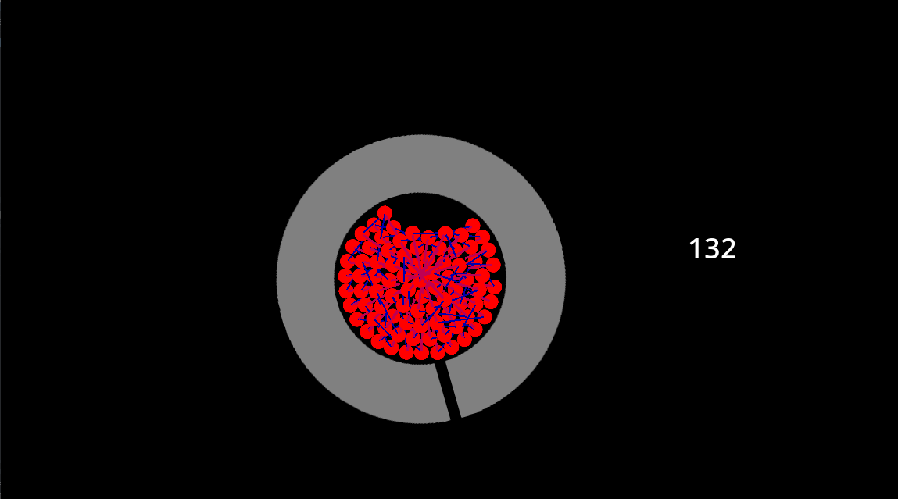
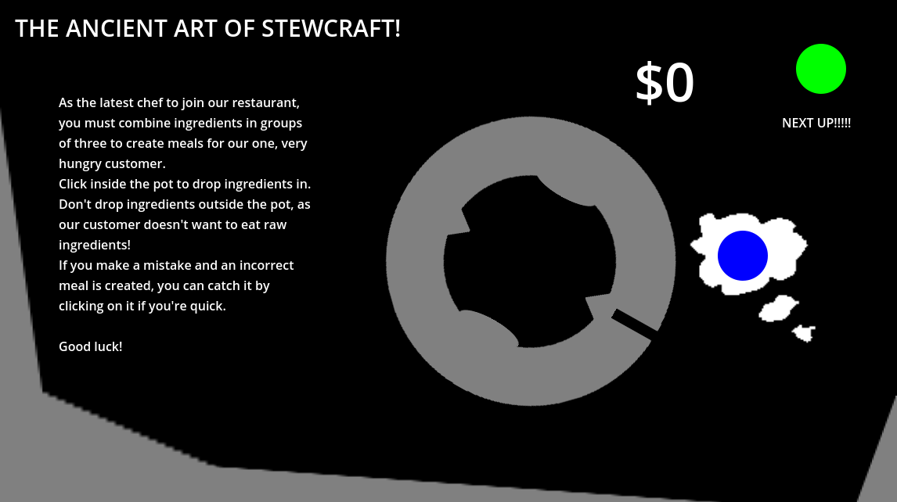

Overview
The Ancient Art of Stewcraft is a "Suika-like" arcade game made for Global Game Jam 2025, following the theme "bubble".
I designed and programmed the game from the 24th to the 26th of January, and Jaydn Jones provided the artwork. Check it out on itch.io!

This is how the game looked on the morning of the first day: the number represents the framerate, as it struggles to manage all the physics objects!
Finding the core mechanic
I didn't immediately have an idea I was set on, so instead tried to find one I liked through experimentation. I started to program a cellular automata system based around bubbles that could attract and repel each other to see if anything interesting came of it. I enjoyed watching the bubbles bounce and glitch around, it resembled a bubbling stew!
Once the bubbles settled, the arrows that showed their movement direction linked up in a uniform pattern, which reminded me of a match-three game. I liked the idea of building a physics-based match-three game using little colourful bubbles, and so built an algorithm for bubbles to recognise when they were in a group of like colours - I'd found my game mechanic!

This is how the game looked by the end of the second day: all of the major mechanics were in place, but it needed some polish!
Finding the fun
I tried to find an enjoyable presentation for the match-three system I had programmed. My course leader suggested that the colourful bubbles bouncing around resembled a gambling game, but I didn't want to program additional complex systems or UI. I let the player spin the pot with the mouse wheel, or stir the bubbles with a virtual spoon, but neither were very fun; the fun came from the bubbles being out-of-control!
It was fun to watch the bubbles cascade over each other and match up unexpectedly, which reminded me of the Suika fruit game. I decided that the goal would be to try and work with the physics to make specific colour matches, while trying not to make the wrong matches by accident.
After the name "The Ancient Art of Stewcraft" was revealed to me in a flash of divine insight, Jaydn drew the bubbles as little ingredients, the completed "meals" as bowls of stew, and then I coded them to fall into the customer's mouth. The game was almost done!
With Jaydn's graphics, some simple sound effects, and a Kevin MacLeod arrangement of Canon in D, the game was complete!
Controlling the chaos
While the game was fun at this point, players remarked that it still felt too chaotic - they wanted more control over making incorrect matches. To remedy this, I allowed for players to "catch" meals before they fell into the customer's mouth if they could react fast enough. I tuned the speed at which the meals fell so that it was possible to grab them without lightning-fast reflexes, but I kept them fast enough that players didn't have to wait around for their correct meals to be registered.